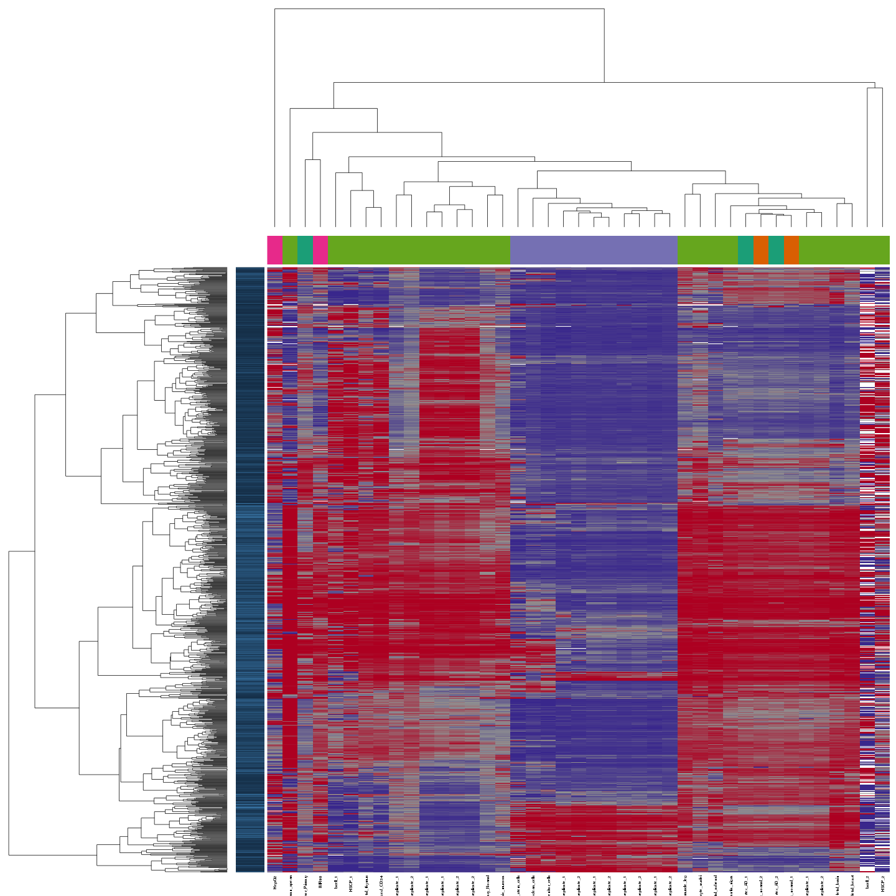
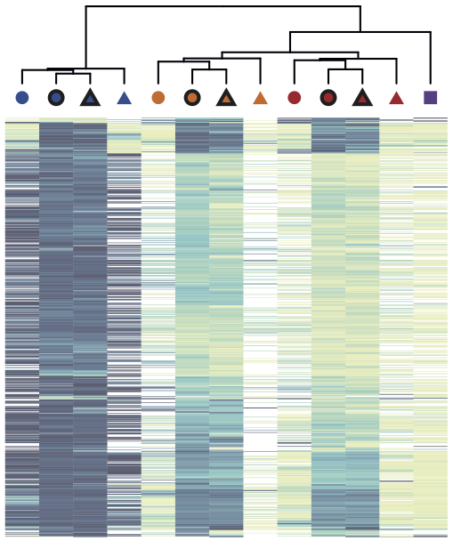

The Methylome Resource was established by applying RnBeads to some of the largest public reference datasets that are currently available for whole genome bisulfite sequencing (WGBS), for reduced representation bisulfite sequencing (RRBS) and for the Illumina Infinium HumanMethylation450 assay. This resource provides a reference for large-scale DNA methylation analyses that can be used in complementary ways:
| Resource | Data Source | Data Archive | Sample Annotation Files | RnBeads Configuration |
|---|---|---|---|---|
| Genome-scale RRBS data for 216 tissues and cell lines |
Encode Project Website | data.zip (3 GB) |
samples.csv (all samples) |
analysis.xml |
samples.csv (17 untreated samples) |
||||
| Genome-wide WGBS data for 41 tissues and cell lines |
Gene Expression Omnibus | data.zip (10 GB) |
samples.csv (all 41 samples) |
analysis.xml |
samples.csv (10 adult primary tissues) |
||||
| Infinium 450k data for 4034 cancer and normal samples |
TCGA data portal | data.zip (34 GB) |
samples.csv (all samples) |
analysis.xml |
samples.csv (40 samples from 10 primary tumors) |
||||
| WGBS data for BLUEPRINT methylomes (2015 release) |
BLUEPRINT data portal | data.zip (18 GB) |
samples.tsv (81 samples) |
analysis.xml |
| WGBS and NOMe-seq data for T cell memory formation |
DEEP data portal | import_RnBSet.zip(2 GB; RnBSet object) |
samples.tsv (13 samples) |
analysis.xml |
| [Use case 1] Infinium 450k data for whole blood and sorted blood cells | GEO GEO |
data.zip (6.3 GB) |
samples.csv (792 samples) |
analysis.xml |
| [Use case 2] WGBS data for BLUEPRINT methylomes (2016 release) |
BLUEPRINT data portal | data.zip (45 GB) |
samples.tsv (195 samples) |
analysis.xml |
| [Use case 3] RRBS data for Ewing Sarcoma (188 samples) | Gene Expression Omnibus | data.zip (5.7 GB) |
samples.csv (188 samples) |
analysis.xmlpreanalysis.R |
| [Use case 4] Cross-platform data set (450k, EPIC, WGBS) from an EPIC evaluation study | GEO | combined RnBSet(136 MB) |
analysis.xml |
In the context of the ENCODE project, Varley et al. established genome-scale DNA methylation maps for various tissue samples and cell lines using reduced representation bisulfite sequencing (RRBS). This RnBeads analysis of 216 samples shows that cells from different germ layers are clearly distinguished by their DNA methylation profiles, and it identifies characteristic loci that can be used for classifying samples according to their tissue type. Including parts or all of this dataset in custom RnBeads analyses provides a useful reference for quality control, analysis and interpretation of user-generated DNA methylation datasets.
Ziller et al. compiled whole genome bisulfite sequencing (WGBS) data for 41 tissues and cell lines comprising data from the Roadmap Epigenomics Project and other sources. The RnBeads analysis identified clear grouping of samples according to tissue types. Furthermore, sample type is strongly correlated with the laboratory performing the experiment. Outliers in terms of experimental quality as well as long term cell culturing are identified. This analysis illustrates how this methylome resource can be used for identifying both technical and biological outliers in large-scale DNA methylation datasets.
In the context of The Cancer Genome Atlas (TCGA) researchers have generated a large collection of cancer methylomes using the Infinium 450k assay. While an integrative analysis of the full dataset has not been published yet, Weisenberger recently summarized and reviewed the activities that led to creating this dataset. This RnBeads analysis of 4034 blood, breast, intestinal and brain cancer samples provides an extensive and interactively browsable analysis of this dataset, which can be used as a starting point for more targeted investigation and hypothesis testing, but also as a reference for interpreting DNA methylation aberrations observed in other cancer cohorts.
In the context of the BLUEPRINT project, whole genome bisulfite sequencing data have been generated for 81 blood related samples. Among others primary monocyte and neutrophil cell samples from healthy donors were profiled. The RnBeads analysis shows similar methylomes between these two closely related cell types, but also significant DNA methylation differences enriched for important biological processes of the immune system.
In the context of the DEEP project, whole genome bisulfite sequencing and NOMe-seq data have been generated for multiple stages during the process of memory formation in human CD4+ T cells (Durek et al., 2016). The data was anlyzed in RnBeads. The results show a progressive loss of DNA methylation during memory formation, particularly in putative regulatory regions of the genome. Two technologies (WGBS and NOMe-seq) were employed to assess CpG methylation levels. Overall, the agreement between both methods is high.
Combined cohort of two studies: (1) 732 whole blood samples from an age study by Johansson et al., and (2) 60 samples from isolated cell types, peripheral blood and whole blood from cell type composition study by Reinius et al. The IDAT files and sample annotations are obtained from the Gene Expression Omnibus, data series GSE87571 and GSE35069.
The final release of the BLUEPRINT project contained whole genome bisulfite sequencing profiles for healthy and malignant blood cell types. The RnBeads analysis of 195 samples identified cell-type-specific variability in methylation patterns and indicated epigenetic similarity between cell types that share a common differentiation history.
This analysis focuses on DNA methylation associated with Ewing Sarcoma, a bone cancer primarily affecting children and young adults. In addition to Ewing tissue samples, healthy Mesenchymal Stem Cells (MSCs), MSCs affected with Ewing sarcoma and Ewing Cell Lines are part of the data set (Sheffield et al., 2017). Using RnBeads' differential methylation module, only few differences between the groups could be detected. However, higher methylation variability was detected in normal MSCs vs. MSCs affected with Ewing Sarcoma, contradicting the assumption that Ewing Sarcoma increases heterogeneity among individual samples.
Pidsley et al. performed a critical evaluation of the EPIC array using a selection of of prostate cancer samples, healthy control tissues and prostate cell lines (GEO: GSE86831). They compared the results of profiling with EPIC array to the predecessor array version, Infinium 450k, as well as whole-genome methylomes of similar samples. Using the recently extended RnBSet merging functionality we processed all these data jointly in one RnBeads analysis. The results showed that, although there are clear technical differences between the methylation values obtained with the three platforms, biological variability could still break through the platform-specific biases. Combined differential methylation analysis in mixed groups of samples measured with different platforms often lead to meaningful functional annotation enrichments.